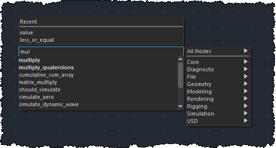
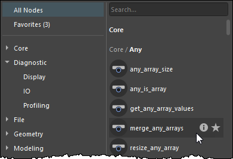

添加节点
您可以使用“选项卡”(Tab)菜单或“节点库”(Node Library)将节点添加到 Bifrost 图表。
- “选项卡”(Tab)菜单是一个弹出式菜单，您可以在工作时调用，以实现不间断的流程。
- “节点库”(Node Library)是一个保持打开的窗格，以便您可以更轻松地浏览和过滤可用节点。
使用“选项卡”(Tab)菜单

使用“选项卡”(Tab)菜单添加节点：
按 Tab 键打开选项卡菜单。
执行下列操作之一：
开始键入以查看下面的匹配节点列表，然后使用指针选择节点（或使用箭头键亮显节点，然后按 Enter 键）。可以键入：
- 节点名称的前几个连续字母，长度不限。
- 最多七个字母，由节点名称中的单词开头串联组成。例如，“gepopo”匹配
get_point_position，“gpp”匹配get_point_position以及get_particle_solver_properties等。可以跳过单词，但必须按顺序排列；例如，scve匹配scalar_to_vector2等。 - 使用空格表示下一个字母必须位于后续单词的开头。例如，“c att”、“c con”和“att c”都匹配
clear_attribute_connections。在空格后，搜索将查找以下一个字母开头并包含其余字符的词语，因此您可以通过键入“s v3”来查找scale_to_vector3。
使用指针或箭头键浏览右侧的名称空间列表并从中选择一个节点。
从上面最近使用的节点列表中选择。
使用“节点库”(Node Library)
若要打开“节点库”(Node Library)，请从 Bifrost 曲线图编辑器的主菜单中选择“窗口 > 节点库”(Windows > Node Library)。默认情况下，它在左侧停靠打开，但您可以拖动标题栏使其浮动或停靠在右侧。

可以执行下列操作：
- 使用左侧的名称空间浏览可用节点。
- 通过双击或拖动单个节点将其添加到图表中。
- 按住 Ctrl 键并单击以切换选择多个节点，然后一次将它们全部拖动到图表中。
- 在“搜索”(Search)框中键入以查看匹配的节点。搜索方式与“选项卡”(Tab)菜单相同：
- 节点名称的前几个连续字母，长度不限。
- 最多七个字母，由节点名称中的单词开头串联组成。例如，“gepopo”匹配
get_point_position，“gpp”匹配get_point_position以及get_particle_solver_properties等。可以跳过单词，但必须按顺序排列；例如，scve匹配scalar_to_vector2等。 - 使用空格表示下一个字母必须位于后续单词的开头。例如，“c att”、“c con”和“att c”都匹配
clear_attribute_connections。在空格后，搜索将查找以下一个字母开头并包含其余字符的词语，因此您可以通过键入“s v3”来查找scale_to_vector3。 - 搜索结果按左侧的名称空间选择进行过滤。若要查看所有匹配的节点，请单击顶部的“所有节点”(All Nodes)。
- 将指针悬停在节点上，然后将光标悬停在其 i 图标上，即可显示简要说明。还会显示 JSON 文件名称、Bifrost 库名称和库作者（如果有）。
- 单击节点的星形图标，以将其添加到收藏夹或从收藏夹中删除。
复制和粘贴节点
您还可以使用 Ctrl+C 和 Ctrl+V 来复制和粘贴所选节点或节点组。您甚至可以在不同会话中运行的曲线图编辑器实例之间复制和粘贴节点。
重命名节点
添加节点后，可以通过双击其名称并键入新名称来重命名该节点。仅支持字母数字字符和下划线。不支持的字符将自动更改为下划线。为了与脚本兼容，名称不能以数字开头。
反映节点用途（而不是其类型）的名称可以使图表更易于理解。将鼠标指针悬停在节点上时，您仍可在信息栏中查看节点类型，或者在选择节点时，在“参数编辑器”(Parameter Editor)中查看节点类型。或者，可以按 T 键在其名称上方显示节点类型。
还可以为任何节点设置值显示表达式，方法是在图表中双击节点名称以对其重命名，然后输入一个字符串，其中包含一个或多个以花括号括起来的端口名称，例如 {my_port}。如果节点具有值显示表达式，那么，除非这些节点的“显示 > 显示节点名称”(Display > Show Node Names)处于启用状态，否则将显示值显示表达式，而不是节点名称。
修改引用复合
添加引用复合后，无法在其中添加节点或进行其他更改。若要修改引用的复合，必须先在本地将其导入到图表中。若要执行此操作，请移出节点（如果已进入），然后右键单击该节点并选择“设为可编辑”(Make Editable)。
未知节点
当使用自定义复合时，特别是使用多个节点库的不同版本时，可能会发现引用复合在内部使用不可用的节点。如果在当前可用的节点库中找不到定义内部复合的 JSON 文件，则会发生这种情况。
当存在依赖于不可用节点的引用复合时，将重新创建缺少的节点作为“未知节点”。这些节点在图表中显示为深红色节点。在这种状态下，图表无法像以前一样工作，因为这些节点执行的计算未知。
但是，将保留未知节点的外部连接和输入值。这样，您可以看到之前存在的图表，并且可以更轻松地修复或更新图表。

可以复制并粘贴未知节点，以及修改并保存包含这些节点的场景。也可以炸开包含这些节点的复合，并使用右键单击菜单移除未知端口。正确的节点定义可用后，图表将正常工作。
隐藏的内部节点
某些节点被视为“内部”节点，默认情况下在“选项卡”(Tab)菜单中不可用。这些节点通常是较低级别的辅助对象节点，通常不适合在图表中用于高级用途。
要取消隐藏所有节点，以便您可以轻松地将其添加到图表中，请将环境变量 BIFROST_DISABLE 设置为 hide-internal-nodes。
如果您正在开发自己的复合库并希望隐藏某些低级复合，可以在其 JSON 文件中编辑元数据。要查看一些示例，请搜索已安装的文件以查找 "metaName": "internal"。单个节点定义和整个名称空间都可以隐藏。